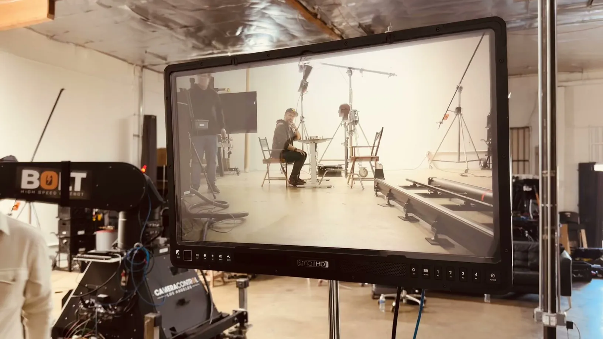
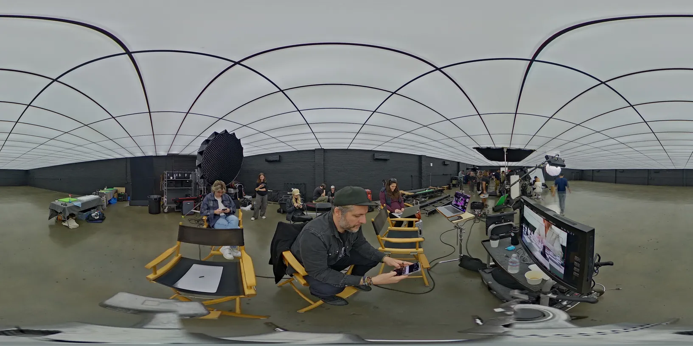
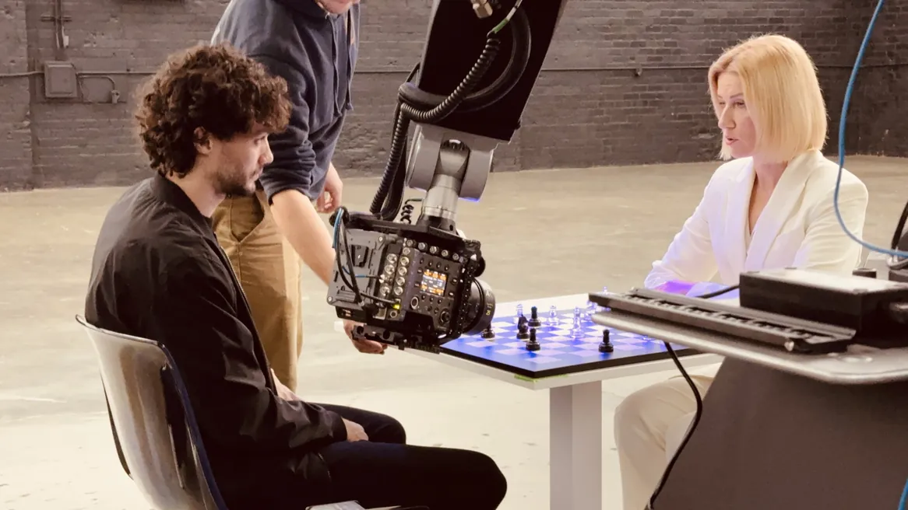
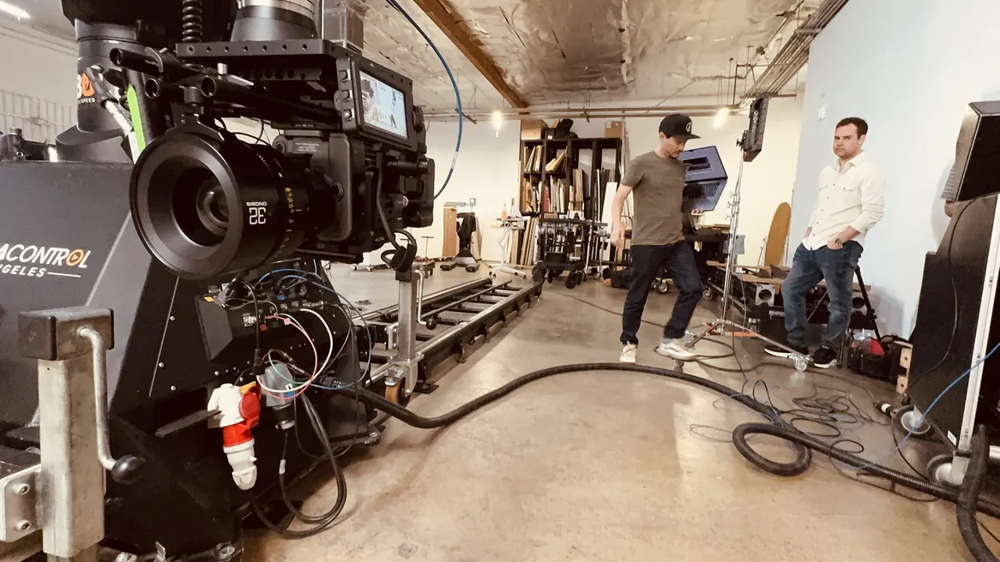
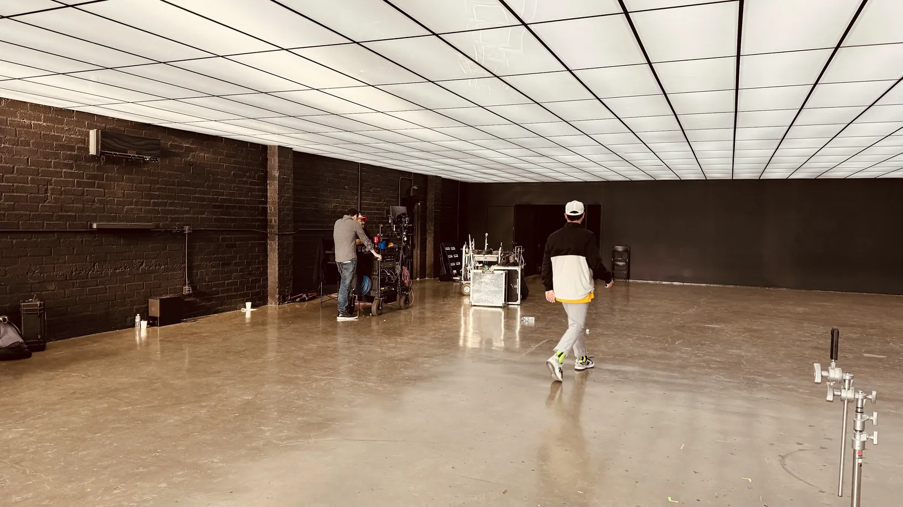

Laundry — motion control
A production at Laundry, March 2024. A day of pre-production, then a Bolt on a track running the same camera move again and again so every variation could exist as a plate. Mr. Pinoux supervised the effects on the floor and captured the stage in 3D.
Une production chez Laundry, mars 2024. Une journée de préproduction, puis un Bolt sur rail qui rejoue le même mouvement encore et encore pour que chaque variation existe sous forme de plate. Mr. Pinoux a supervisé les effets sur le plateau et capté le décor en 3D.
The centre of the job is a Bolt, on a track. MRMC's high-speed cinebot will carry twenty kilos of camera at five metres a second and go from standstill to full speed in a fraction of one — but speed is not really what it is hired for. It is hired because the move can be performed again exactly. Run the same camera path over a full set, then over an empty one, then over a single prop, and the passes line up afterwards to the pixel. Every variation anyone might ask for becomes a plate that already exists.
Le cœur du projet, c'est un Bolt, monté sur rail. Le cinebot haute vitesse de MRMC emporte vingt kilos de caméra à cinq mètres par seconde et passe de l'arrêt à la pleine vitesse en une fraction de seconde — mais ce n'est pas vraiment pour la vitesse qu'on le loue. On le loue parce que le mouvement peut être rejoué à l'identique. On fait passer la même trajectoire caméra sur un décor complet, puis sur un décor vide, puis sur un seul accessoire, et les passes se superposent ensuite au pixel près. Chaque variation qu'on pourrait demander devient une plate qui existe déjà.
One day of pre-production and then the shoot, 21 and 22 March 2024. On a motion-control day the preparation is most of the value: the arm is only worth its rental if the moves have been decided before it arrives. Two metres of reach and three and a half of height sound generous until you have to fit a move inside them.
Une journée de préproduction puis le tournage, les 21 et 22 mars 2024. Sur une journée de motion control, la préparation fait l'essentiel de la valeur : le bras ne vaut son prix de location que si les mouvements ont été décidés avant qu'il arrive. Deux mètres de portée et trois et demi de hauteur paraissent généreux jusqu'au moment où il faut faire tenir un mouvement dedans.


Alongside the shoot the stage itself was recorded: a 360° panorama for the lighting, and photogrammetry of the surfaces so the materials could be rebuilt. A set that still exists in three dimensions afterwards is a set you can add to without matching anything by eye.
En parallèle du tournage, le plateau lui-même a été enregistré : un panorama à 360° pour l'éclairage, et de la photogrammétrie des surfaces pour que les matériaux puissent être reconstruits. Un décor qui existe encore en trois dimensions après coup, c'est un décor auquel on peut ajouter sans rien raccorder à l'œil.
Mr. Pinoux was VFX supervisor on the floor, and also there to have an opinion — the directions were discussed rather than handed over. That is usually what a supervisor is for on a shoot this controlled: not policing the plates, but saying early what will and will not be recoverable.
Mr. Pinoux était superviseur VFX sur le plateau, et aussi présent pour donner un avis — les directions se discutaient plutôt qu'elles ne se transmettaient. C'est en général à ça que sert un superviseur sur un tournage aussi maîtrisé : pas à surveiller les plates, mais à dire tôt ce qui sera récupérable et ce qui ne le sera pas.


